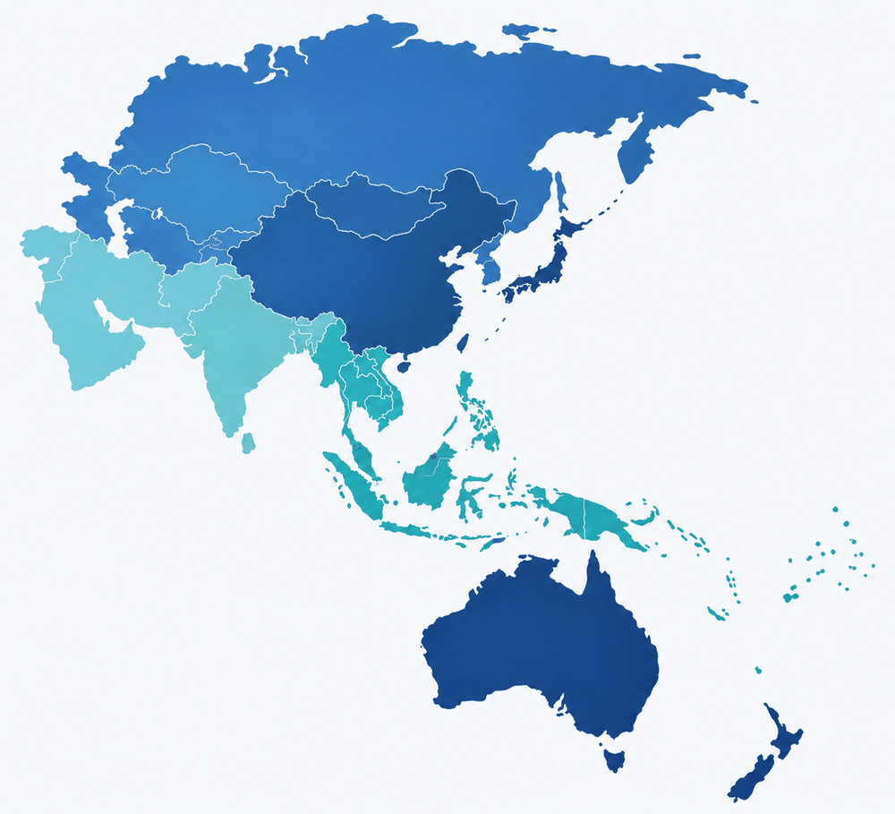

Advancing peritoneal dialysis care, education, and research across the Asia Pacific region. Join our community of nephrology professionals dedicated to improving patient outcomes.
The latest from the chapter and from ISPD.
29 September to 3 October 2026. Scientific programme, pre-congress workshops and the speaker list are all published.
Congress detailsThe latest chapter newsletter. Every past issue is kept in the archive.
Read the newsletterOSEA case discussions and the KID-D patient education series, free to watch.
Watch the videosDiscover our mission, activities, educational resources, and ways to get involved.
Learn about our organizational structure, leadership, and strategic direction for advancing PD care in the region.
Read moreParticipate in PD case discussions, upcoming congresses, and collaborative programs with associated societies.
Explore activitiesApply for fellowships, scholarships, and travel grants to support your professional development in peritoneal dialysis.
View supportStay updated with the latest ISPD Asia Pacific news, archives, and submission guidelines for contributions.
Read newsletterAccess ISPD clinical guidelines, position papers, and curated video learning for PD professionals.
Start learningJoin the ISPD Asia Pacific Chapter today and connect with a global network of PD professionals and researchers.
Apply nowThe ISPD Asia Pacific Chapter serves as the regional hub for peritoneal dialysis professionals across Asia and the Pacific. Our chapter works closely with the ISPD CEO and Executive Committee to align regional initiatives with global standards.
We are committed to promoting excellence in PD care through education, research collaboration, and advocacy for patient access to quality treatment.
Discover Our Story
Connecting nephrology professionals across Asia Pacific to share knowledge and best practices in peritoneal dialysis.
The International Society for Peritoneal Dialysis brings together regional chapters from around the world. The Asia Pacific Chapter is proud to be one of them.
Advancing PD care across the African continent through education, training, and regional collaboration.
Visit on ispd.orgOur chapter — connecting nephrology professionals across Asia and the Pacific to improve PD patient outcomes.
Our storyPromoting excellence in peritoneal dialysis practice throughout the Middle East region.
Visit on ispd.orgLeading PD research, education, and clinical practice across the United States and Canada.
Visit on ispd.org